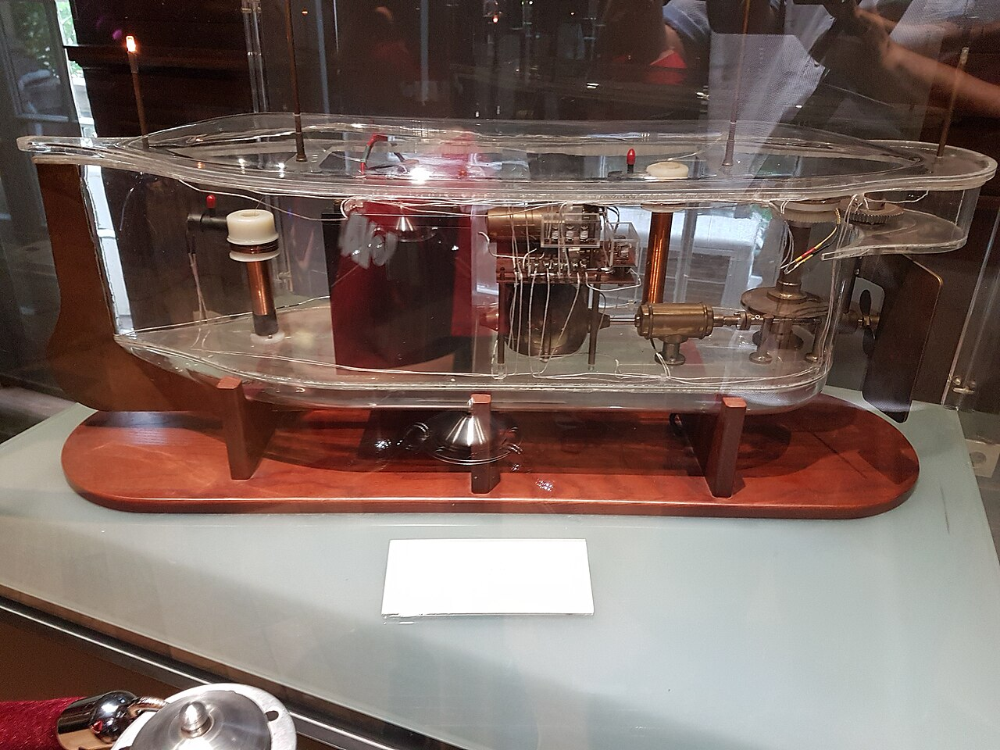
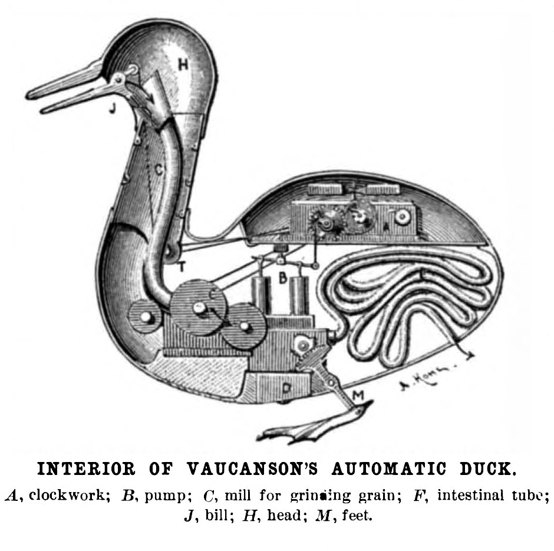
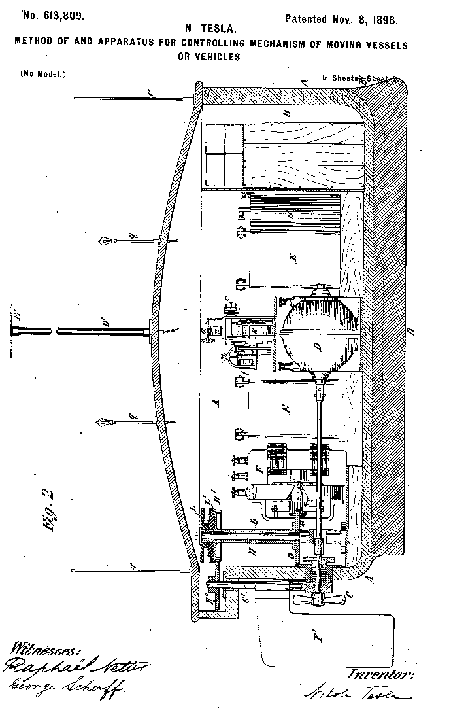

Negentropy Labs
Machines that make order out of chaos.

The Name
Left alone, everything drifts toward disorder. Physicists call that drift entropy. A robot is a small engine that pushes the other way: it sorts, builds, carries and repairs. That push is negentropy, and it is what we build for.

What We Are Building
Ciel is the brain we are building for small robots. It learns how the physical world behaves by watching and moving through it, and it runs on the robot itself, not in a distant data centre.
- Low-cost robot hardware that anyone can build.
- Learning on the device, from the robot's own experience.
- Open build logs and videos as we go.
We are an early-stage, student-led lab. Work in progress is shared on GitHub.
Our Lineage
People have built machines that move on their own for centuries. We stand on their shoulders.



Contact
Founded by Divyarth Jain.
Write to negentropy@divyarth.online.